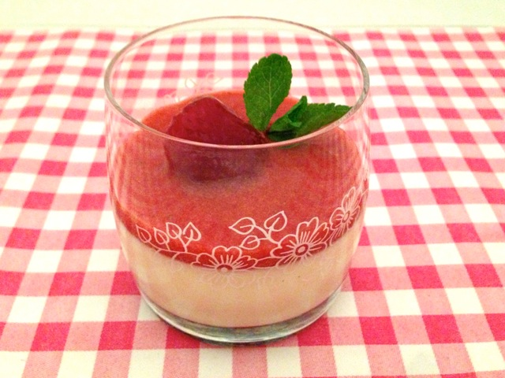

Panna cotta
_______________________________________________________________
Panna cotta is heerlijk voor als je net lekker hebt gegeten. Ook is het lekker op een warme dag.
Ingrediënten
- 400 g aardbeien
- 2 el suiker
- 100 g rauwe rababer voor de panna cota
- 1 l room
- 1 dl melk
- 75 g suiker
- 1 vanillepeul
- 4 blaadjes gelatine (in koud water geweekt)
- 240 g witte chocolade (in stukjes)
Bereidingswijze
- Snij de vanillepeul open en schraap de zaadjes eruit
- Breng room, melk, suiker, vanillezaad en peul aan de kook
- Haal de pan van het vuur en roer de uitgeknepen gelatineblaadjes en de chocolade erdoor
- Alles 30 min laten intrekken en dan door een fijne zeef gieten
- Verdeel de massa over 4 gepaste glazen en laat 4 uur opstijven!
- Na 4 uur: Meng de 2 el suiker door de stukjes rabarber en snij de aarbeien in stukjes en verdeel rabarber en aardbeien over de panna cotta en serveer 
Tip Serveer er eens een koele Liefmans Cuvée brut bij ....zalig !